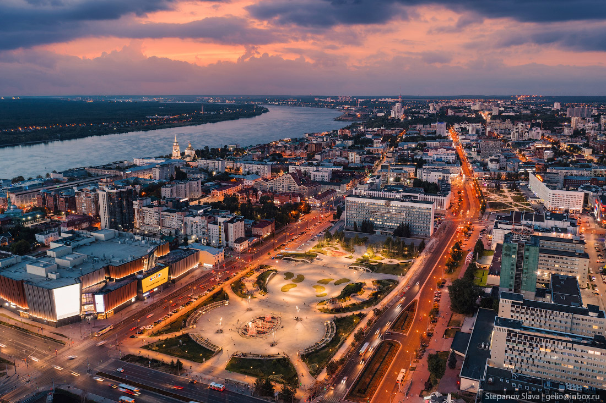

Мой любимый город
Пермь — город в Предуралье, административный центр Пермского края. Стоит на берегу реки Камы. Пермь вытянулась вдоль Камы на 65 километров. По занимаемой площади Пермь является четвёртым городом в России после Москвы, Санкт-Петербурга и Волгограда.
Известен своими достопримечательствами как:
- Дом Грибушина
- Музей пермских древностей
- «Счастье не за горами»
- Пермяк-соленые уши
- Райский сад